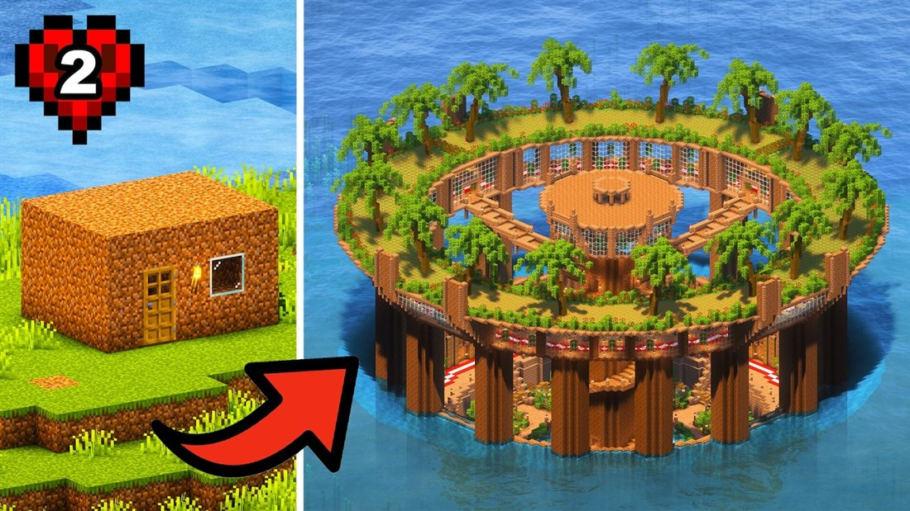
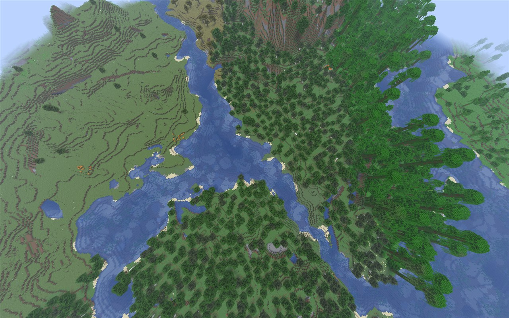
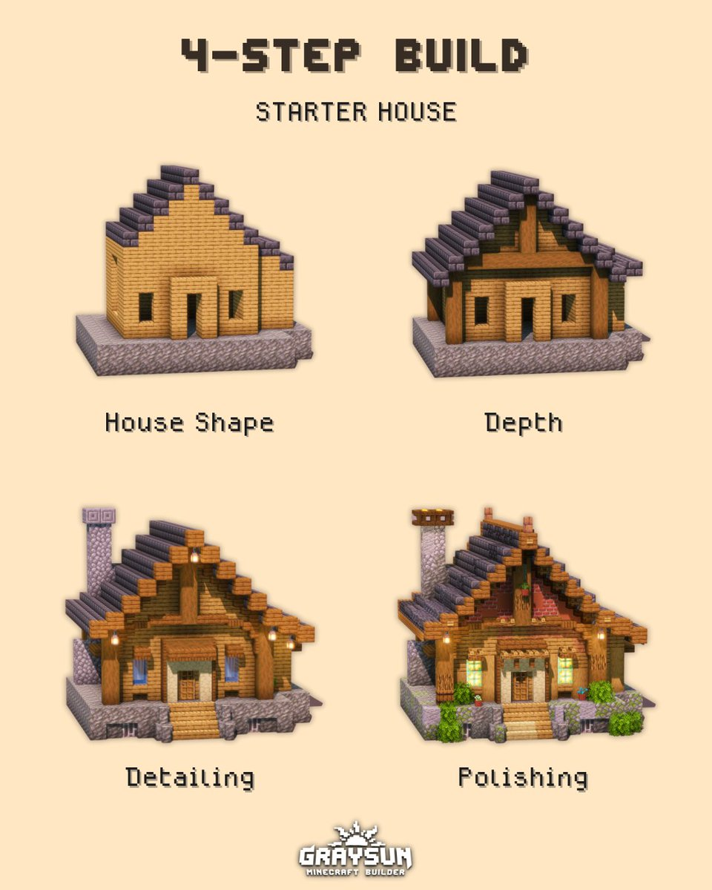

The Ultimate Minecraft Survival Guide: From Dirt Shack to Mega Base
IntermediateAbout 1 minVersion-independent

Survival mode is the definitive way to experience Minecraft. It asks you to balance creativity with resource management and defense. Once you have stable food and basic iron gear, it is time to move out of your temporary hole. A great permanent base balances looks and function.
Choose the perfect location

- Proximity to resources: Look for a spot where multiple biomes meet.
- Flat versus terrain: Plains are easiest for large builds, while mountains offer natural defense and dramatic views.
- Water access: Being near a river or ocean can provide food, transportation, and aesthetic appeal.
Plan your structure

- Layered design: Use multiple levels and terraces to add depth and interest.
- Material variety: Mix wood, stone, and metal blocks for a visually appealing structure.
- Functional spaces: Include farms, storage rooms, and crafting areas in your base layout.